SOC168 · Whoami Command Detected in Request Body
- Categoria
- Ataques Web
- Caso
- SOC168
- Registro
- Escalonamento recomendado
Resumo
Investigação de possível injeção de comandos contra um servidor web.
IOCs
| Tipo | Valor | Observação |
|---|---|---|
| IP | 61[.]177[.]172[.]87 | IP de origem, malicioso no VirusTotal. |
| Host | WebServer1004 | Alvo das requisições. |
| Comandos | whoami, ls, cat | Registrados nas cinco requisições. |
Passo a passo da investigação
Resumo do incidente
O alerta SOC168 — Whoami Command Detected in Request
Body indica uma possível tentativa de command
injection contra o servidor web WebServer1004. -
IP de origem observado: 61.177.172.87 -
Eventos encontrados: 5 eventos nos logs -
Comandos suspeitos registrados: whoami,
ls e cat - Classificação
preliminar: atividade suspeita e não planejada, sem indicação
nas anotações de que fosse um teste autorizado -
Encaminhamento: validar o escopo, considerar o
isolamento do ativo conforme o procedimento de resposta a incidentes e
escalar para a equipe N2 > Importante: uma resposta
HTTP 200 confirma que o servidor respondeu à requisição,
mas, isoladamente, não comprova que o comando foi executado com sucesso.
Confirmar a execução e o impacto usando telemetria do EDR, processos e
logs da aplicação.
Investigação
1. Alerta e contexto do laboratório
O alerta analisado sinaliza o comando whoami no corpo de
uma requisição. A imagem abaixo registra o contexto do laboratório.
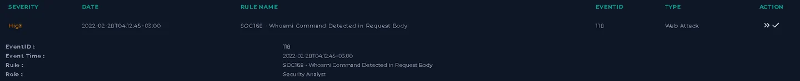
2. Busca nos logs
Pesquisamos o IP 61.177.172.87 no Log Management e
encontramos cinco eventos para análise.
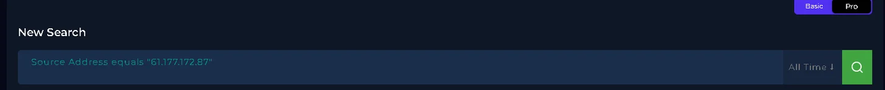
3. Identificação do ativo
A consulta ao EDR associou a atividade ao host WebServer1004.
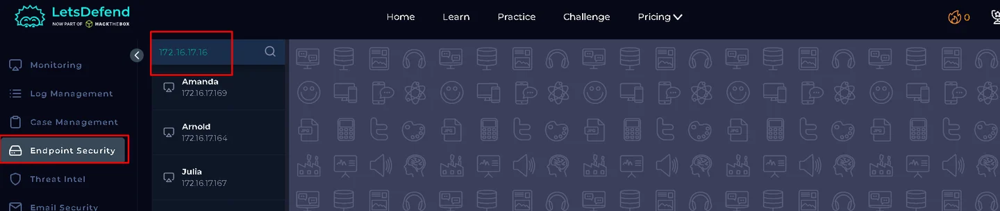
4. Análise das requisições e dos comandos
As anotações da investigação destacam comandos como
whoami, ls e cat, compatíveis com
tentativa de identificar o contexto do usuário e enumerar informações do
sistema. A anotação inicial relaciona o uso de cat à
consulta de arquivos de usuário/senha; confirmar nos registros os
caminhos acessados e se houve exposição de dados.
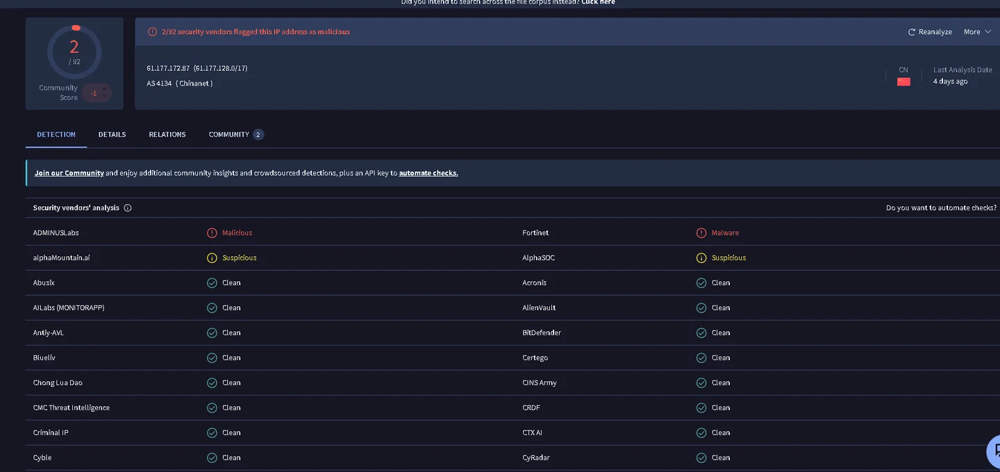
5. Reputação e registro do IP
A consulta ao VirusTotal indicou reputação maliciosa para o IP no momento da análise. Trate esse dado como um indicador de apoio, não como prova isolada de autoria.
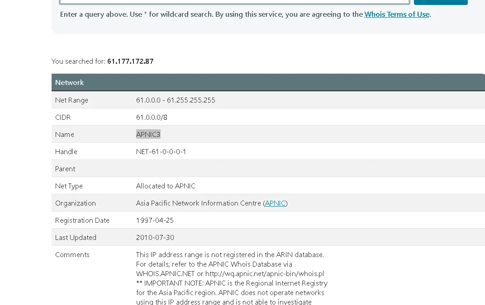
Também foi consultado o WHOIS. A anotação original menciona APNIC3; o registro de alocação ajuda a contextualizar o endereço, mas não identifica necessariamente quem realizou a atividade.
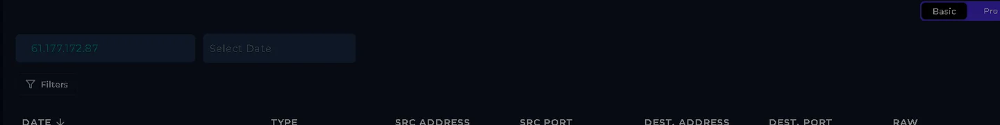
6. Status HTTP e busca por e-mail
Foi observado status HTTP 200 em uma das respostas. Isso
significa que houve resposta HTTP bem-sucedida, mas não confirma, por si
só, a execução do comando ou o comprometimento do servidor.
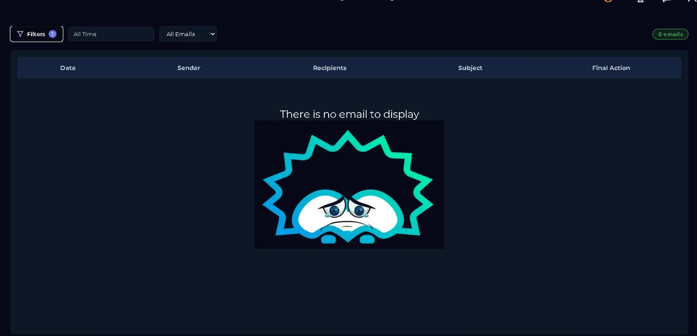
Também foi feita uma verificação relacionada a e-mail. O resultado dessa consulta não está descrito nas anotações; confirmar e registrar o que foi encontrado.
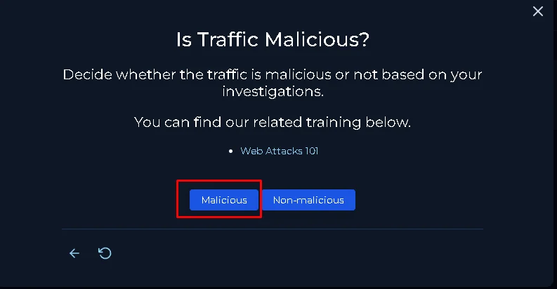
Avaliação
O conjunto de evidências é compatível com uma tentativa suspeita de command injection. A atividade foi registrada como não planejada, e o IP de origem foi sinalizado como malicioso pela consulta de reputação. Ainda é necessário confirmar se os comandos foram executados, quais dados ou processos foram acessados e se houve impacto no servidor.
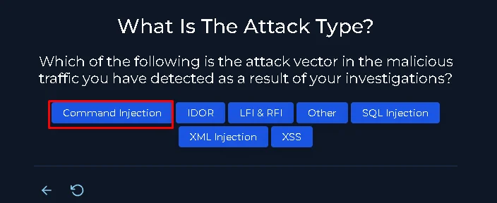
A atividade não foi identificada como um teste autorizado da empresa, conforme as informações registradas.
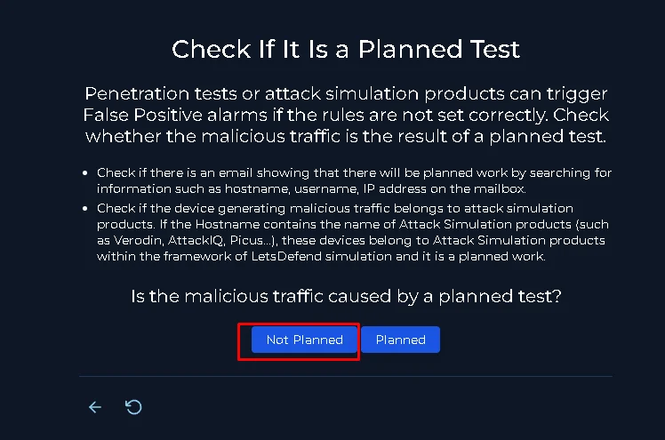
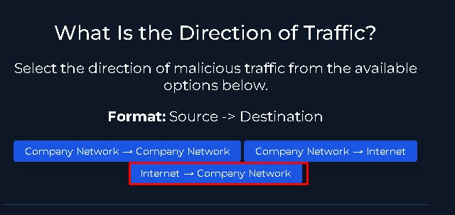
Ações recomendadas e encaminhamento
- Confirmar no EDR/processos do host se houve execução de
whoami,lsoucat, correlacionando os horários com as cinco requisições. - Verificar os caminhos consultados, possíveis acessos a arquivos sensíveis, processos filhos, conexões de saída e outros indicadores de comprometimento.
- Preservar logs e evidências; ampliar a busca pelo IP e por requisições semelhantes em outros ativos.
- Avaliar e executar o isolamento do WebServer1004 conforme o procedimento interno, registrando quem autorizou e quando foi aplicado. As anotações indicam a intenção de isolar, mas não confirmam que a ação já foi concluída.
- Escalar o caso para os analistas N2 para validação do impacto e definição das próximas medidas. A captura final registra a conclusão/encaminhamento documentado durante a triagem.
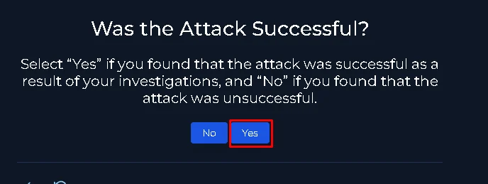
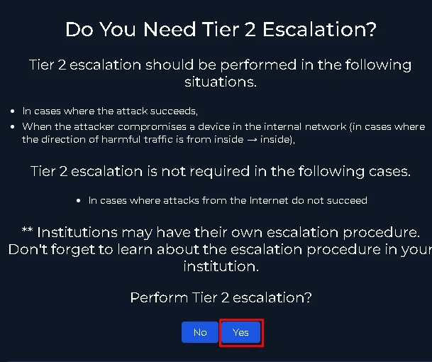
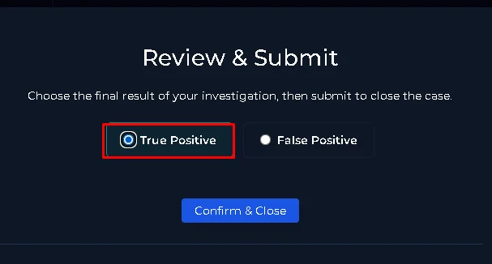
Lições aprendidas
- Confirmar no EDR se houve execução dos comandos.
- Verificar caminhos acessados e conexões de saída.
- Isolar o ativo conforme o procedimento e escalar ao N2.
Exercício simulado. Algumas capturas foram recortadas ou tiveram campos ocultados.